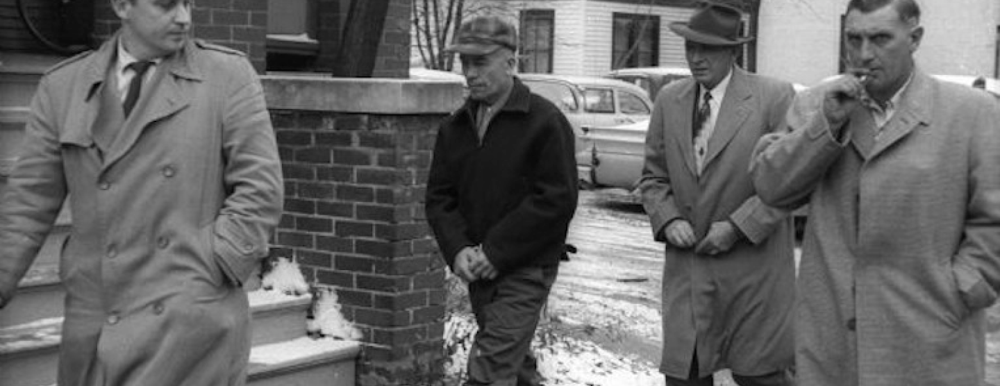
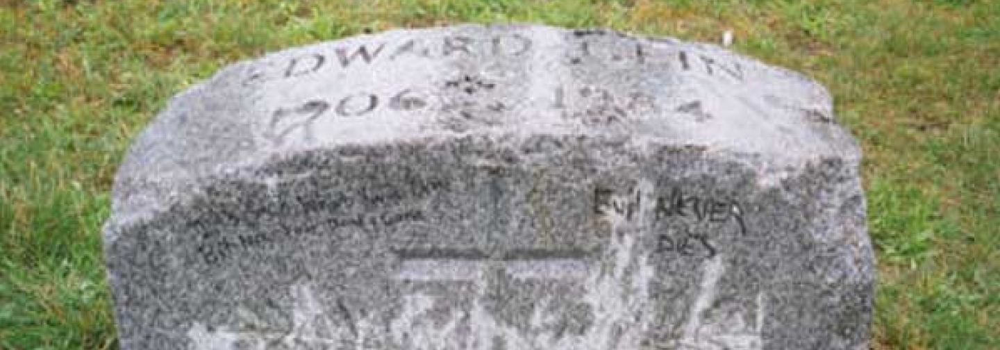

Edward Theodore "Ed" Gein (La Crosse, 27 agosto 1906 – Madison, 26 luglio 1984) è stato un serial killer statunitense. Commise atti di squartamento e necrofilia sulle vittime; era anche solito violare delle bare e costruirsi vari pezzi di arredo con le parti dei corpi.
Biografia
Edward T. Gein nacque il 27 agosto 1906 a La Crosse, nello Stato del Wisconsin, figlio di Augusta T. Lehrke (1878-1945) e di George P. Gein (1873-1940) era noto per essere un violento alcolizzato, costringendo la famiglia a trasferirsi in una fattoria nella città di Plainfield, situata nella contea di Waushara. Augusta Gein, luterana e fanatica religiosa, era solita crescere i figli in uno stato di quasi totale isolamento, favorito anche dal luogo di residenza: la loro vita consisteva in scuola e lavoro nella fattoria, dove trasmise a Ed ed Henry il concetto dell'innata immoralità del mondo, l'odio verso l'alcolismo e che tutte le donne (esclusa lei) fossero prostitute e strumenti del diavolo; peraltro, il sesso era accettabile soltanto al fine di procreare. Ogni pomeriggio leggeva ai figli la Bibbia, in particolare passi dell'Antico Testamento nei quali si parla di morte, omicidio e punizione divina.
All'età di dieci anni Gein provò un orgasmo vedendo i suoi genitori macellare un maiale in un vicino casotto, mentre una volta raggiunta la pubertà, Augusta diventò sempre più invadente e possessiva: una volta, sorprendendolo mentre si masturbava nella vasca da bagno, gli afferrò i genitali definendoli «la maledizione dell'uomo» e lo immerse nell'acqua bollente per punirlo.
All'età di 21 anni la madre fece promettere a lui e ad Henry che sarebbero sempre rimasti entrambi vergini. Con una corporatura esile e un atteggiamento piuttosto timido ed affeminato, Gein divenne bersaglio dei compagni più prepotenti, ed era anche noto per il continuo sogghigno che mostrava durante le conversazioni serie.
Il 1ºaprile 1940, George P. Gein morì all'età di 66 anni per insufficienza cardiaca, motivo per cui Ed e il fratello iniziarono a fare piccoli lavoretti in città per aiutare a coprire le spese di soggiorno. Da questo periodo in poi, il fratello Henry incominciò a rifiutare il punto di vista della madre Augusta e tentò di convincere anche Edward. Il 16 maggio 1944 i fratelli si trovarono in mezzo a un incendio nella fattoria: Edward raccontò alla polizia di aver perso di vista il fratello, ma fu poi in grado di indicare con precisione dove si trovava il corpo; sebbene fosse evidente che Henry aveva subito un trauma alla testa il perito locale giunse alla conclusione che fosse morto di asfissia nel tentativo di spegnere l'incendio.
Gein visse da solo con l'amata madre, ma meno di due anni dopo, il 29 dicembre 1945, Augusta morì dopo essere stata colpita da un ictus, lasciando l'afflitto figlio solo nell'isolata fattoria; La morte di Augusta fece scomparire dalla sua vita quello che molti psicologi criminali definiscono come "l'unico filo che ancora ne preservava la sanità mentale".
Arresto
Il 16 novembre 1957 Bernice Worden, proprietaria di una ferramenta nonché madre del vice-sceriffo di Painfield, sparì nel nulla. Il figlio della donna, il vicesceriffo Frank Worden, entrò nel negozio verso le 17 e trovò il registratore di cassa aperto e macchie di sangue sul pavimento; dichiarò agli investigatori che Ed Gein era stato nel negozio la sera precedente la scomparsa della madre e che era ritornato la mattina successiva per un gallone di antigelo: il relativo scontrino fu l'ultimo scritto da Bernice nel giorno della sua scomparsa.
Durante la sera dello stesso giorno, Gein fu arrestato in una drogheria di West Plainfield e la sua casa fu perquisita. Un vicesceriffo della contea di Waushara scoprì il corpo decapitato di Bernice Worden in un capanno nella proprietà di Gein, appesa per le caviglie, aperta in due a partire dalla vagina e con delle corde legate ai polsi. La donna era stata "squartata come un cervo". Era stata uccisa dal colpo di una carabina calibro 22. La testa fu invece rinvenuta in un'altra stanza della casa, con due chiodi conficcati ai lati: Ed aveva intenzione di appenderla al muro come un trofeo.
La casa degli orrori
Cercando nella casa le autorità trovarono:
• venti nasi;
• frammenti e ossa integre (umane);
• un cestino fatto di pelle umana;
• teschi sulla testata del letto di Ed;
• un corsetto fatto a partire da un torace femminile scuoiato dalle spalle alla vita;
• gambali creati con pelle umana;
• la maschera creata con il viso di Mary Hogan in un sacchetto di carta;
• il teschio di Mary Hogan in una scatola;
• la testa di Bernice Worden in un sacco di iuta;
• nove vulve in una scatola di scarpe;
• il vestito di una giovane donna e le vulve di due donne, che avrebbero avuto circa quindici anni;
• una cintura fatta di capezzoli umani;
• unghie femminili;
• dieci teste di donne come decorazioni nella camera da letto;
• pelle umana usata come tappezzeria per lampade e sedie;
• calotte craniche trasformate in ciotole;
• un cuore umano (si discute su dove sia stato trovato; gli addetti al rapporto affermano tutti che fosse in una casseruola nella stufa, mentre dei fotografi della scena del crimine affermarono che fosse in una scatola di carta);
• due labbra umane che decoravano una finestra;
• un tamburo fatto di pelle umana;
• femori usati come gambe per un tavolo;
• nove maschere fatte di pelle umana;
• una colonna vertebrale adibita a lampada;
• vestiti fatti di pelle umana.
Questi reperti furono fotografati in laboratorio e poi distrutti.

Manufatti di Ed Gein
La confessione di Gein
Gein confessò di avere dissotterrato una donna di mezza età recentemente sepolta che somigliava molto a sua madre, di averne portato il cadavere a casa e di averne lavorato la pelle per farne manufatti. Fece quaranta visite notturne al cimitero, dichiarando di essere, durante ogni visita, in uno stato confusionale e violò circa diciotto tombe. Gein ammise di aver rubato da nove tombe di cimiteri locali e condusse gli investigatori presso queste ultime. Allan Wilimovsky, della scientifica, partecipò all'apertura di tre tombe identificate da Gein: i feretri erano in casse di legno, le assi erano poste di traverso e la sommità era almeno a 60 centimetri dalla superficie. Gein aveva profanato le tombe subito dopo i funerali, quando non erano ancora state perfettamente interrate.
Alcune tombe furono esumate perché le autorità erano incredule circa la possibilità che Gein avesse dissotterrato da solo una tomba in una sola notte; furono trovate, come egli descrisse, due tombe vuote, una bara fu trovata vuota, l'altra non era stata aperta da Gein poiché aveva perso il suo piede di porco e la maggior parte del corpo della terza bara era invece stato preso.
Gein fu considerato sospettato anche in molti altri casi irrisolti nel Wisconsin, quali la scomparsa di una babysitter di La Crosse, Evelyn Hartley, nel 1953. Durante l'interrogatorio confessò inoltre di aver ucciso Mary Hogan, dipendente di una taverna scomparsa dal 1954, e lasciò anche intendere di aver commesso altri delitti in gioventù, tra cui l'omicidio di una ragazzina scomparsa diversi decenni prima da Plainfield.
Il rituale macabro
La letteratura considera l'usare pelle di donna come un "rituale folle di travestitismo".Si pensa che Gein sperimentasse anche una forma di necrofilia, ricavando piacere sessuale dai cadaveri mutilati, ma Gein negò sempre di aver avuto rapporti coi cadaveri riesumati, perché avevano un cattivo odore. Confessò che dopo la morte della madre aveva avuto il desiderio di cambiare sesso: secondo molti egli aveva creato il suo "abito da donna" per poter assumere le sembianze della madre.
Processo e reclusione
Gein fu giudicato mentalmente instabile e incapace di sostenere il processo e fu condotto all'ospedale statale centrale a Waupun, nel Wisconsin. In seguito l'ospedale fu trasformato in prigione e Gein fu trasferito all'ospedale statale Mendota a Madison. Nel 1968 i medici di Gein stabilirono che era abbastanza sano da sostenere il processo, tuttavia fu discolpato per infermità mentale. Scampata la sedia elettrica, Ed Gein passò gli ultimi sedici anni in un manicomio criminale.

Arresto di Ed Gein
Morte
Il 26 luglio 1984 Ed Gein morì per insufficienza respiratoria in seguito a un cancro, nell'ospedale statale di Mendota. La sua lapide nel cimitero di Plainfield è stata frequentemente vandalizzata nel corso degli anni, finché non fu rubata nel 2000. L'anno successivo fu trovata nelle vicinanze di Seattle e in seguito trasportata in un museo nella contea di Waushara.
La distruzione della casa e l'automobile
Il 20 marzo 1958, mentre Gein era in detenzione, la sua casa bruciò: si ipotizzò che l'incendio fosse doloso. Egli commentò: «è meglio così». Nel 1958 la sua auto, una berlina Ford del 1949, usata per trascinare i corpi delle vittime, fu venduta a Bunny Gibbons. Quest'ultimo acquistò l'automobile in un'asta per la tenuta di Gein, tenutasi nel 1958. Quattordici offerte diverse furono fatte per l'auto, tuttavia Gibbons resistette e vinse.

Tomba di Ed Gein